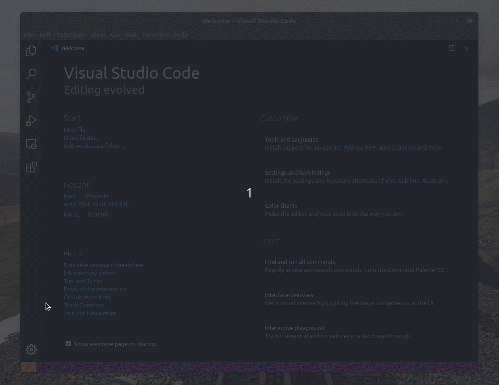
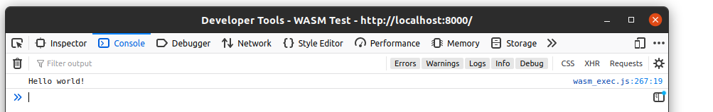

Saying ‘Hello, World!’ with TinyGo and WebAssembly¶
Setting Up¶
Note
What I describe here is definitely not a requirement in order to use TinyGo, but me wanting to play with yet more technologies so feel free to skip this section if you want! 🙂
If you’re looking for details on getting started with TinyGo I suggest taking a look at their documentation
The recent release of Ubuntu 20.04 (and my desire to have a computer that works properly! 😂) has convinced me to switch away from using Arch Linux as my distro of choice. That said I have been spoiled by how easy it is to grab the latest version of some programming language and start playing with it…
Turns out I can have the best of both worlds! Thanks to LXD and the interface it provides around the native container technology built into Linux I was able to spin up an Arch Linux container with all the tools I needed to edit and run my code.
Spinning up Arch Linux¶
Following this`_ article it was easy enough to pull down and launch an Arch Linux image from the community repository
$ snap install lxd
$ lxd init # ... and picking all the defaults
$ lxd launch image:archlinux/amd64 tinygo # 'tinygo' is the name I've given my container
Once the container has started it’s easy enough to open a bash shell and start installing what we need
$ lxc exec tinygo -- /bin/bash
[root@tinygo] $ pacman -S tinygo llvm lld
Users and Project Data¶
Even in an unprivileged container (which is what I think LXD uses by default?) its probably not the best idea to run programs as root so we should create a normal user account and set a password
[root@tinygo] $ useradd -m alex
[root@tinygo] $ passwd alex
Then its time to share the project folder with the container so that the tools inside are able to work with it.
$ mkdir hello-world
$ lxc config device add tinygo workdir disk source=/host/path/to/hello-world/ path=/home/alex/hello-world/
[root@tinygo] $ ls /home/alex
hello-world
VSCode¶

Attaching VSCode to ‘tinygo’ container.¶
Just because the development tools we’re using are isolated in their own container doesn’t mean we have to give up on all the features of our editor. With VSCode’s Remote Development Extensions we can connect to a remote environment where VSCode will install its server component along with any other extensions we require - all of which will remain isolated in the container.
The remote capabilities of VSCode come in a few flavours and while VSCode has an extension dedicated to containers it appears that it’s hard wired to work with Docker which isn’t much use in this case… but since each LXC container is assigned a local IP address I decided to try the SSH method.
This means we need to enable ssh access from within the container itself.
[root@tinygo] $ pacman -S openssh
[root@tinygo] $ systemctl enable --now sshd.service
Then for all the Go related tooling in VSCode to function I also had to install the main Go implementation.
[root@tinygo] $ pacman -S go
Finally we can discover the IP address of the container using the lxc list command and
try to connect VSCode to the container logging in as the alex user we created earlier.
$ lxc list
+--------+---------+---------------------+-----------------------------------------------+-----------+-----------+
| NAME | STATE | IPV4 | IPV6 | TYPE | SNAPSHOTS |
+--------+---------+---------------------+-----------------------------------------------+-----------+-----------+
| tinygo | RUNNING | 10.68.193.81 (eth0) | fd42:56e0:e39c:b4c1:216:3eff:feaa:3b91 (eth0) | CONTAINER | 0 |
+--------+---------+---------------------+-----------------------------------------------+-----------+-----------+
Access Denied!!¶
Once I started to create the files necessary for the project I very quickly realised that
the project folder we passed into the container was mounted as read-only! It turns
out there is some extra wizardry required to give the alex@tinygo user permission to
write files back to the host…
I really don’t quite understand the details of how users and permissions work with these containers but from what I can gather LXD needs to reuse the ID of my user account on the host as the ID of the user within the container?..
Anyway according to this post the incantations needed are
$ echo "root:$UID:1" | sudo tee -a /etc/subuid /etc/subgid
which is a one time setup allowing my user ID on the host to be reused. Then on a per-container basis we also need to tell LXD to reuse my ID within a given container
$ lxc config set tinygo raw.idmap "both $UID 1000"
Phew! I think, finally, we’re in a position to crack on with the program itself. Was all of that necessary?.. probably not. Was it interesting? I certainly think so! Is it worth the effort? Well, I guess only time will tell…
TinyGo¶
With the setup out of the way time to write our “Hello, World!” program in Go
package main
//go:export main
func main() {
println("Hello, World!")
}
Notice the //go:export main comment. Using comments like these is how we tell TinyGo
which functions we want to be callable from the JavaScript code that will wrap our
WebAssembly module. This is then compiled with the following TinyGo command.
$ mkdir public/
$ tinygo build -o public/hello.wasm -target wasm main.go
Why TinyGo?
While the standard Go compiler has support for WebAssembly the binaries it produces are typically quite large.
Whereas TinyGo is an alternate compiler for the Go language that specifically targets constrained environments such as embedded devices and microcontrollers. This means the binaries it produces are typically much smaller - at the expense of missing some features of the language.
WebAssembly¶
With our WebAssembly binary ready to go it’s time to load it into the browser and execute it.
<!DOCTYPE html>
<html lang="en">
<head>
<meta charset="UTF-8">
<meta name="viewport" content="width=device-width, initial-scale=1.0">
<title>WASM Test</title>
</head>
<body>
<script src="wasm_exec.js"></script>
<script>
const go = new Go()
WebAssembly.instantiateStreaming(fetch("hello.wasm"), go.importObject)
.then(module => {
let wasm = module.instance
go.run(wasm)
})
</script>
</body>
</html>
There’s not too much to go into here - I’m surprised at how straightforward this was! 😀 The WebAssembly.instantiateStreaming function is provided by the browser to fetch a wasm executable over the network and compile it. It also takes an object that describes details such as how much memory to allocate to the module and which JavaScript functions should be passed into it.
Thankfully in our case most of these details are handled by the Go() object provided
by the wasm_exec.js file from the TinyGo project. All we have to do is make sure that
this file is also accessible by the browser. The file itself should be included as part
of your TinyGo install, mine was located in /usr/lib/tinygo/targets/wasm_exec.js
More details on using the compiled WebAssembly module can be found in the TinyGo documentation

This is probably my most convoluted ‘Hello, World!’ program to date!¶
All being well, you should be able to open your browser to the webpage we created above and see the message “Hello, World!” written to the console!